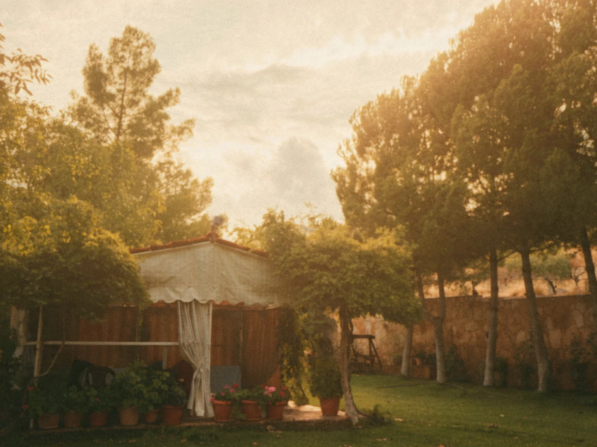

Public schools
Official schools from primary to secondary level.
Schools and health services for Chmustar and the surrounding villages.
Students from many nearby villages come to Chmustar to study.
Official schools from primary to secondary level.
Private schools offering different programmes and languages.
Technical and vocational institutes that prepare young people for work.
Chmustar has health centres, clinics and pharmacies that serve the town and the villages around it.
Medical emergency? Call the Lebanese Red Cross on 140. See all emergency numbers.
